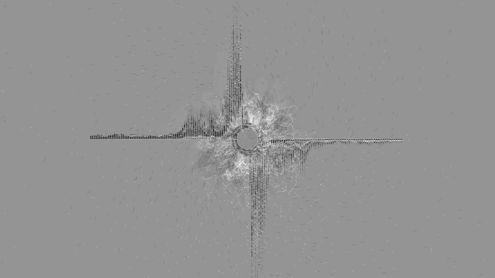
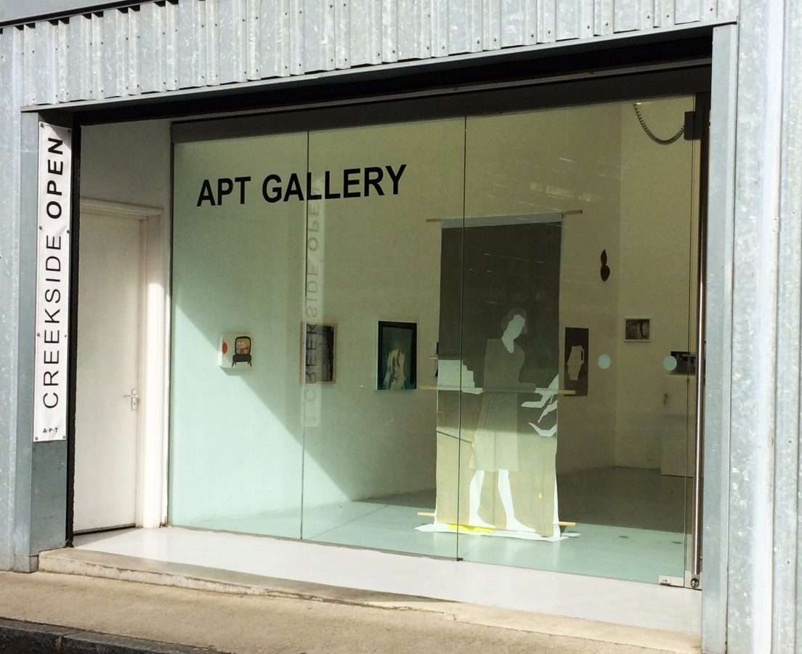

Eeldrop and Appleplex
Media: digital print, audio/text-driven algorithmic visualisation, and Processing code Dimensions: 1280cm x 720cm Year: 2017-2018 Exhibition: The Lumen Prize, The Art in Perpetuity Trust Gallery
Eeldrop and Appleplex[1] was T.S. Eliot's first and only work of short fiction. It can be viewed as a glimpse into the Author's mind during a pivotal point in his life —as a young American living in London and finding his way, before renouncing US citizenship and life ahead. Eeldrop and Appleplex looks at two philosophical views on the human experience and meaning —in a more abstract sense, both philosophical views circulate from the same origin, the same center. However, each come to different conclusions about what ought to be done from the center. "Eeldrop and Appleplex - A Survey of Contemporary Society" (2017) is an artistic interpretation of Eliot's text, which visualizes the philosophical points of views, their origins, conclusions, and the paths between. Programmed 100 years after the original and yet only a few London street corners away from the original site of penmanship, the words hold a physical and societal closeness in the face of variability of time. Eeldrop on the right and Appleplex on the left contemplate, iterate, and circulate out from common origin.
"From the beginning of his career as a poet and critic —from the end of his career as philosopher and Orientalist— Eliot would distinguish between two sorts of response to the modern discovery that meaning was an overrated concept. One response was to find life meaningless and on this account to strike a non-conformist or anti-intellectualist or a Dadaist pose. The other position Eliot spelled out... was to acknowledge that only Meaning is meaningless, and then to go about one's business."[2]
Eeldrop and Appleplex is visualized using the programming language Processing via sound and text data sources. The sound source, my recorded dictation of the entire original text, is visualized via Fast-Fourier Transform by transforming the original amplitude vs time data to amplitude vs frequency data, which generates a spectrum. FFT is able to run with the use of Minim, a Processing library that allows loading and manipulating audio files. The left-extending abstracted linear bar graphic represents all parts of the dictation that compose Appleplex's words. The right-extending abstracted linear bar graphic represents all parts of the dictation that compose Eeldrop's words. These two visual elements use a smoothing factor for a more consistent visual flow and swing back and forth on a grayscale between black and white as the visualization progresses over time. The central-radial visual elements visualize both Eeldrop and Appleplex's words along with the words of the narrator. These data sources are consistently in rotation around the central graphical axis, the central source of the philosophical views. Only a subset of the FFT band ranges are visualized in two forms; white ellipses representing London footpaths and a cyclical black to white series of lines that represent planes of view and add layered visual complexity. The final central visual element is the central semi-transparent ellipse that creates a contrasting ghosting region of isolated shapes in motion.
While the sound source data visualizes words, the text data from Project Gutenburg visualizes something, perhaps, different. The spaces between words are visualized as splintered bits of black (Appleplex) and white (Eeldrop) extending from the center to the winded far corners of the composition. This involves modes of scale, rotation, and translation in space. As numerous musicians have stated in more or less words, a pause is, perhaps, more than a simple void between the things that matter. “Music is the space between the notes” – Claude Debussy [3]
One whisper that underlies both Eeldrop's and Appleplex's thoughts is that the human experience is far from ignorable, but our modes of classification and simplistic modelings are weak approximations of the complex and unique reality we inhabit. The gap of approximation ghosts our understanding at the center.
Eeldrop: "Why...[were] we were able to detach [the man] from his classification and regard him for a moment as an unique being, a soul, however insignificant, with a history of its own, once and for all. It is these moments we prize, and which alone are revealing. For any vital truth is incapable of being applied to another case: the essential is unique. Perhaps that is why it is so neglected: because it is useless."
Appleplex: "...What we grasp in that moment of pure observation on which we pride ourselves, is not alien to the principle of classification, but deeper. We avoid classification. We do not deny it. But when a man is classified something is lost."
Eeldrop: "I should go even further than that, the majority not only have no language to express anything save generalized man; they are for the most part unaware of themselves as anything but generalized men. This cataloging is not only satisfactory to other people for practical purposes, it is sufficient to themselves for their 'life of the spirit'. Many are not quite real at any moment."
Appleplex: "What is to be our philosophy?"
Eeldrop: "Our philosophy is quite irrelevant...We must avoid having a platform... We cannot escape the label, but let it be one which carries no distinction, and arouses no self-consciousness."
So what we do when that something is lost amidst the self-conscious distinctions, labels, and classifications? We go looking for answers. Answers in the positively detached pauses of the present.
 References
- http://www.gutenberg.org/ebooks/5982
- Jeffry M. Perl and Andrew P. Tuck - Philosophy East & West, V. 35 No. 2 (April 1985), pp. 116-131
- Turning Numbers into Knowledge: Mastering the Art of Problem Solving (2001) by Jonathan G. Koomey, p. 96